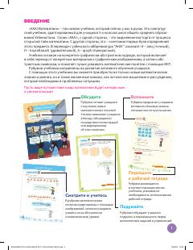

М5Umumiy o'rta ta'lim maktablarining 5-sinf o'quvchilari uchun matematika darsligi.
Mazkur darslik umumiy o'rta ta'lim maktablarining 5-sinf o'quvchilari uchun mo'ljallangan bo'lib, matematika fanini Singapur ta'lim dasturi asosida o'rgatadi. Kitobda natural sonlar, kasrlar, geometrik shakllarning yuzasi va hajmi hamda nisbatlar kabi mavzular qulay va tushunarli tarzda bayon etilgan.